About a month ago, a website called “The Best Schools” published a list entitled “The 50 Most Influential Living Psychologists in the World.” Readers immediately noticed that there was a disturbing lack of Martian psychologists included on this list (after all, they didn’t specify that “in the world” had to refer to Earth!).
Far less amusing was the number of women and people-of-color (POC) who were chosen to represent “influential” living psychologists. By my count, 78% of those listed were male, and 100% of them were white. I want to stress that all of the individuals included on that list are brilliant scientists who have certainly made important impacts on the field - it is not my goal to diminish their accomplishments.
However, as a POC psychologist-in-training, I was inspired to crowdsource a new list of influential living psychologists, one that highlighted the lives and accomplishments of important female and POC figures who had been previously overlooked. In other words, for those of us who look at such lists and think, “Is there room in this field for people who look like me?”, my goal is to expand the record, not to correct it.
I want to caveat that this list should not be taken as any sort of “big-t” Truth. It reflects the (undoubtedly idiosyncratic) inclinations of a select group of Twitter users. (As a concrete example, I observed a few instances in which individuals’ nominations consisted exclusively of professors from their own affiliated university!) But I do believe that it captures some amount of “little-t” truth, and it gives us hope for a future in which individuals from historically-marginalized backgrounds are increasingly well-represented in our science.
In total, there were a stunning 396 unique individuals who received nominations. Most of them had not been previously included on the list published by “The Best Schools.” Although I had originally intended to identify the top 50, my current list consists of 71 individuals due to ties (and I’d rather err on the side of celebrating more people’s accomplishments than fewer!). They are listed below in alphabetical order. Descriptions were pulled and lightly edited from nominees’ personal websites and/or Wikipedia.

Renée Baillargeon
Dr. Baillargeon’s research focuses on early causal reasoning in four core domains: physical reasoning, psychological reasoning, biological reasoning, and sociomoral reasoning. She assumes that each domain is equipped with a skeletal explanatory framework that enables infants to reason and learn about events in the domain.

Mahzarin Banaji
Dr. Banaji studies thinking and feeling as they unfold in social context, with a focus on mental systems that operate in implicit or unconscious mode. She studies social attitudes and beliefs in adults and children, especially those that have roots in group membership. She explores the implications of her work for questions of individual responsibility and social justice in democratic societies.
Lisa Feldman Barrett
Dr. Barrett’s theory of constructed emotion hypothesizes that “anger,” “sadness,” “fear,” and similar mental events are not basic building blocks in the mind, but instead are mental events that result from the dynamic interplay of more basic brain networks that are not themselves specific to emotion. Her lab studies how emotions emerge from prediction signals in the brain that function as concepts to categorize incoming sensory inputs from the body and the surrounding context, constructing experiences and perceptions of emotion.
Dorothy Bishop
Dr. Bishop researches language impairments in children. In some cases, language difficulties have an obvious cause, such as hearing loss or a condition such as Down’s syndrome. In other cases, children have particular difficulty learning to talk or understand language for no obvious reason. Professor Bishop has studied children with ‘specific language impairment’ or SLI, who make up around 3% of the population but tend to be neglected by researchers. Using twin studies, she has investigated the genetic component to these disorders, and has worked with molecular geneticists to find out which genes are involved.

Sarah-Jayne Blakemore
Dr. Blakemore’s research focuses on neurocognitive development in typically developing adolescents. She is particularly interested in the development of the social brain, as well as how the brain matures to enable cognitive control, a collection of brain processes that guide thought and behaviour in accordance with internally generated goals or plans.

Marilynn Brewer
Dr. Brewer’s major interests include (1) social cognition, the perception and cognitive representation of individual persons and person “types”; (2) intergroup relations, especially the study of ingroup biases and the effects of contact between groups on intergroup acceptance; and (3) social identities and the self-concept.

Susan Carey
Dr. Carey’s research concerns the development of concepts in the child and adult (i.e., over ontogenesis), and the cultural construction of concepts over history. Her research is informed by insights from philosophical analyses of concepts, historical analyses of conceptual change in science, and experimental studies of human infants, young children and adults, and of non-human primates.

Laura Carstensen
Dr. Carstensen is the founding director of the Stanford Center on Longevity, which explores innovative ways to solve the problems of people over 50 while improving the well-being of people of all ages. She is best known in academia for socioemotional selectivity theory, a life-span theory of motivation.
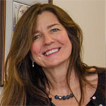
BJ Casey
Dr. Casey is a world leader in human neuroimaging and its use in typical and atypical development. She is a world leader in human neuroimaging and its use in typical and atypical development. She examines developmental transitions across the life span, especially during the period of adolescence. Her work is grounded in translational studies from genetically altered mice to human patients, developing models for several mental health problems that affect millions of young people today.

Margaret Clark
Dr. Clark’s research focuses on optimal intra- and interpersonal functioning close relationships, the social functions of emotion, and the intersection of those two areas. She is interested in the normative nature of interpersonal processes as they occur within family relationships, friendships, and romantic relationships and in how the norms that apply to such relationships differ from those that apply to relating to acquaintances and business partners.
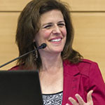
Leda Cosmides
Dr. Cosmides is best known for her work in pioneering the new field of evolutionary psychology, which weaves together cognitive science, human evolution, hunter gatherer studies, neuroscience, psychology and evolutionary biology, in an attempt to understand and map the human mind and brain.

Michelle Craske
Dr. Craske has published extensively in the area of fear, anxiety, and depression. In addition to over 392 research articles, she has written academic books on the topics of the etiology and treatment of anxiety disorders, gender differences in anxiety, translation from the basic science of fear learning to the understanding and treating of phobias, and principles and practice of cognitive behavioral therapy, as well as several self-help books and therapist guides.

William E. Cross, Jr.
Dr. Cross is one of America’s leading theorists and researchers on black identity development and racial-ethnic identity development. His text, Shades of Black, is a classic in the field. He was swept-up by the Black Consciousness Movement of the 1960s and 1970s. Subsequently, he constructed Nigrescence Theory to explicate the identity change process linked to social movement dynamics.

Nilanjana Dasgupta
Dr. Dasgupta’s research challenges the assumption that implicit prejudice and stereotypes are immutable and identifies circumstances under which they can be changed. Some of her projects identify conditions that reduce implicit bias while other projects identify conditions that magnify implicit bias. Some projects focus on changing implicit stereotypes about outgroups whereas others focus on changing the impact of ingroup stereotypes on individuals’ own self-concept and life decisions.

Patricia Devine
Dr. Devine is interested in how people manage the intrapersonal and interpersonal challenges associated with prejudice in our contemporary society. One main focus for recent work focused on the sources of motivation, internal and external, for responding without prejudice and the unique challenges these alternate sources of motivation create for managing the interpersonal aspects of intergroup relations.

Adele Diamond
Dr. Adele Diamond is one of the pioneers in the field of Developmental Cognitive Neuroscience, and researches executive functions which depend on prefrontal cortex (PFC) and interrelated brain regions. Executive functions include ‘thinking outside the box’ (cognitive flexibility), mentally relating ideas and facts (working memory), and giving considered responses rather than impulsive ones, resisting temptations and staying focused (inhibitory control, including selective attention).

Lisa Diamond
Dr. Lisa Diamond studies the development and expression of sexual identity and orientation over the life course. She is particularly interested in investigating the potential underpinnings of different subtypes of sexual-minority experience (such as stable versus fluctuating patterns of attraction and exclusive versus bisexual patterns), and examining how these patterns relate to tonic levels and phasic changes in gonadal hormones, oxytocin, HPA axis activity, and autonomic nervous system activity.

Angela Duckworth
Dr. Duckworth’s research focuses on two traits that predict achievement: grit and self-control. Grit is the tendency to sustain interest in and effort toward very long-term goals. Self-control is the voluntary regulation of impulses in the presence of momentarily gratifying temptations. On average, individuals who are gritty are more self-controlled, but the correlation between these two traits is not perfect: Some individuals are paragons of grit but not self-control, and some exceptionally well-regulated individuals are not especially gritty.
Carol Dweck
Dr. Dweck’s work bridges developmental psychology, social psychology, and personality psychology, and examines the self-conceptions people use to structure the self and guide their behavior. Her research looks at the origins of these self-conceptions, their role in motivation and self-regulation, and their impact on achievement and interpersonal processes.
Alice Eagly
Dr. Eagly is known for her research on the psychology of gender, especially sex differences and similarities in leadership, prosocial behavior, aggression, partner preferences, and sociopolitical attitudes. She has also published on the content of stereotypes, and has proposed social role theory as a theory of sex differences and similarities, and of the origins of sex differences in social behavior. She has also researched attitudinal selectivity in information processing.

Jennifer Eberhardt
Dr. Eberhardt investigates the consequences of the psychological association between race and crime. Through interdisciplinary collaborations and a wide ranging array of methods—from laboratory studies to novel field experiments—Dr. Eberhardt has revealed the startling, and often dispiriting, extent to which racial imagery and judgments suffuse our culture and society, and in particular shape actions and outcomes within the domain of criminal justice.

Jacquelynne Eccles
Dr. Eccles has conducted research on a wide variety of topics including gender-role socialization, teacher expectancies, classroom influences on student motivation, and social development in the family and school context. She has made seminal contributions to the study of achievement-related decisions and development. Most notably, her expectancy-value theory of motivation and her concept of stage-environment have served as perhaps the most dominant models of achievement during the school years, contributing to extensive research and reform efforts to improve the nature of secondary school transitions.
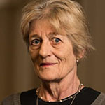
Phoebe Ellsworth
Dr. Ellsworth is noted for her work in law and psychology, where she has conducted research on jury behavior and decision making, public opinion and the death penalty, and eyewitness identification. She is also known for her research in emotion, including facial emotions, cognition and emotion, and interpretation of emotion. Dr. Ellsworth is known for her contributions to appraisal theory, emotions and culture, challenges of emotion and language, and for her writing on William James. In much of her research, Dr. Ellsworth has intertwined an interest in cultural differences.
Martha Farah
Dr. Farah is a cognitive neuroscientist who works on problems at the interface of neuroscience and society. These include the effects of childhood poverty on brain development, the expanding use of neuropsychiatric medications by healthy people for brain enhancement, novel uses of brain imaging (e.g. legal, diagnostic and educational contexts), and the many ways in which neuroscience is changing the way we think of ourselves as physical, mental, moral and spiritual beings.

Susan Fiske
Dr. Fiske’s research addresses how stereotyping, prejudice, and discrimination are encouraged or discouraged by social relationships, such as cooperation, competition, and power. In laboratory studies, she examines how a variety of relationships affect people forming impressions of others. Society’s cultural stereotypes and prejudice also depend on relationships of power and interdependence. Group status and competition affect how groups are (dis)liked and (dis)respected. In cultural surveys, she examines the content of group stereotypes based on race, gender, age, (dis)ability, income, and more, finding patterns in the ways that society views various groups.

Uta Frith
Dr. Frith is best known for her research on autism spectrum disorders. Throughout her career, she has been developing a neuro-cognitive approach to developmental disorders, and has specifically investigated specific cognitive processes and their failure in autism and dyslexia. Her aim is to discover the underlying cognitive causes of these disorders and to link them to behavioural symptoms as well as to brain systems. She aims to make this research relevant to the education of people with development disorders and to contribute to a better quality of their everyday life.
Susan Gelman
Dr. Gelman’s research investigates the development of concepts and language in childhood. Research topics include: categorization and inductive reasoning; psychological essentialism; generic concepts and generic language; social categories (including gender, race, traits, and human difference); ownership, authenticity, and object history; parent-child conversations; and semantic development.
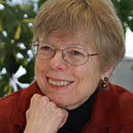
Dedre Gentner
Dr. Gentner is a prominent researcher in the study of analogical reasoning, and has published extensively on: the semantics of word classes and their effects on acquisition of language; structure-mapping in similarity; similarity in long-term memory versus similarity in reasoning; comparison processes in learning and development; relational language and relational cognition; analogical processes in the history of science; comparison processes in education; and mental models.

Morton Gernsbacher
Dr. Gernsbacher’s research focuses on the cognitive processes and mechanisms that underlie language comprehension. She has challenged the view that language processing depends upon language-specific mechanisms, proposing instead that it draws on general cognitive processes such as working memory and pattern recognition. During recent years, her research has focused on the cognitive and neurological processes of people with autism. She has posited that the speech difficulties associated with autism stem from motor planning challenges, not from intellectual limitations or social impairment.
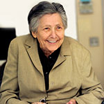
Lila Gleitman
Dr. Gleitman’s work has concerned the mental lexicon and its interface with syntax, language acquisition, and the relation between language and thought. She is an internationally renowned expert on language acquisition and developmental psycholinguistics, focusing on children’s learning of their first language.

Phillip Goff
Dr. Goff is the co-founder and president of the Center for Policing Equity, and an expert in contemporary forms of racial bias and discrimination, as well as the intersections of race and gender. Dr. Goff conducts work exploring the ways in which racial prejudice is not a necessary precondition for racial discrimination. That is, despite the normative view of racial discrimination—that it stems from prejudiced explicit or implicit attitudes—his research demonstrates that situational factors facilitate racially unequal outcomes.

Adele Goldberg
Dr. Goldberg’s research focus is on the psychology of language, including theoretical and experimental aspects of grammar and its representation, acquisition of form-function correspondences, and syntactic priming. Her works aim to illuminate parallels between language and other cognitive processes. She is best known for her work on constructions, statistical preemption, the creation and development of the artificial construction learning paradigm, and the suggestion that both statistics (particularly in the form of skewed input) and the functions of constructions play an important role in learning.

Susan Goldin-Meadow
Dr. Goldin-Meadow began her studies exploring whether children who lack a (usable) model for language can nevertheless create a language with their hands. She has found that deaf children whose profound hearing losses prevent them from learning the speech than surrounds them, and whose hearing parents have not exposed them to sign, invent gesture systems which are structured in language-like ways. This interest led to her current work on the gestures that accompany speech in hearing individuals. She has found that gesture can convey substantive information – information that is often not expressed in the speech it accompanies.

Alison Gopnik
Dr. Gopnik’s research explores how young children come to know about the world around them. The work is informed by the “theory theory” – the idea that children develop and change intuitive theories of the world in much the way that scientists do. Most recently, she has been concentrating on young children’s causal knowledge and causal learning across domains, including physical, biological and psychological knowledge. In collaboration with computer scientists, she is using the Bayes Net formalism to help explain how children are able to learn causal structure from patterns of data, and she has demonstrated that young children have much more powerful causal learning mechanisms than was previously supposed.

Janet Hyde
Dr. Hyde’s research falls in the areas of psychology of women, human sexuality, and gender-role development. One current research project focuses on the emergence of gender differences in depression in adolescence, using data from our longitudinal project, The Wisconsin Study of Families and Work. Another current project, funded by the National Science Foundation, uses the technique of meta-analysis to synthesize available data on gender differences and similarities in mathematics performance. Another current project evaluates whether single-sex schooling actually produces better outcomes than coeducational schooling.

Olcay Imamoğlu
Dr. Imamoğlu has conducted research focusing on: the interplay between self, relationships, and well-being across cultures; a new model of self-construction: The Balanced Integration-Differentiation (BID) Model; gender, marital relations, and satisfaction across cultures; the social psychology of older adults, and environmental assessment; and social cognition and affect.
Marcia Johnson
Dr. Johnson uses cognitive behavioral and neuroimaging (fMRI) techniques to investigate the nature of human cognition and memory. She has published research on topics such as: a component process analysis of memory and cognition; reality monitoring/source monitoring; the relation between emotion and cognition; the “self” in cognition; and changes in cognition associated with aging.

Nancy Kanwisher
Dr. Kanwisher studies the functional organization of the human brain as a window into the architecture of the mind. Over the last 20 years, her lab has played a central role in the identification of several dozen regions of the cortex in humans that are engaged in particular components of perception and cognition. Many of these regions are very specifically engaged in a single mental function such as perceiving faces, places, bodies, or words, or understanding the meanings of sentences or the mental states of others.
Shinobu Kitayama
Dr. Kitayama’s research focuses on cultural variations in self, cognition, emotion, and motivation. Over the last two decades, he has used a variety of experimental methods to document a wide array of East-West differences in psychological processes. His more recent work has explored regional, social class, as well as age differences and similarities in psychological tendencies to understand their socio-cultural underpinnings. He has also pioneered the use of neuroscience measures such as fMRI and EEG in the investigation of the dynamic, recursive interaction between culture and the brain, thereby contributing to the emerging field of cultural neuroscience.

Marta Kutas
Dr. Kutas studies how meaning is organized, accessed, and constructed in the brain, focusing specifically on understanding how context shapes language and memory processing. Her studies track these cognitive and neural processes in both healthy and clinical individuals across the adult lifespan, primarily by assessing patterns of brainwaves recorded at the scalp as well as reaction times to various visual and auditory stimuli.

Ellen Langer
Dr. Langer is a social psychologist and the first female professor to gain tenure in the Psychology Department at Harvard University. She has been described as the “mother of mindfulness” and has written extensively on the illusion of control, mindful aging, stress, decision-making, and health. Her recent work is concerned with the interaction of mindfulness and health, business, and education.

Elizabeth Loftus
Dr. Loftus studies human memory. Her experiments reveal how memories can be changed by things that we are told. Facts, ideas, suggestions and other post-event information can modify our memories. The legal field, so reliant on memories, has been a significant application of the memory research. Loftus is also interested in psychology and law, more generally.

Asifa Majid
Dr. Majid investigates the nature of categories and concepts in language, in non-linguistic perception and cognition, and the relationship between them. She adopts a large-scale cross-cultural approach in order to establish which aspects of categorisation are fundamentally shared, and which language-specific. Using an interdisciplinary approach, she has researched domains such as space, event representation and more recently the language of perception.
Brenda Major
Dr. Major is an international expert in the psychology of stigma and how people perceive and cope with stigma and discrimination. A core theme of her work is psychological resilience – how people maintain their sense of self-esteem, psychological well-being and physical health despite exposure to discrimination, negative life events, and adversity.
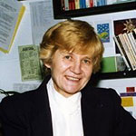
Ivana Markova
Dr. Markova’s main theoretical research interests are the ontology and epistemology of theory in social psychology, and the interdependence between social thinking, dialogue and semiotics. Empirical research concerns social representations of democracy, individualism and responsibility in post communist Europe and the study of dialogues between people with impaired speech and their partners.

Hazel Markus
Dr. Markus’ research focuses on the role of self in regulating behavior and on the ways in which the social world shapes the self. Her work examines how cultures, including those of nation or region of origin, gender, social class, race, ethnicity, religion, and occupation, shape thought, feeling, and action. She is the co-director of SPARQ (Social Psychological Answers to Real-world Questions) at Stanford University.
Wendy Berry Mendes
Dr. Mendes researches embodiment: how emotions, thoughts, and intentions are experienced in the body and how bodily responses shape and influence thoughts, behaviors, and emotions. Current research areas include coping with stigma and discrimination, dyadic intergroup interactions, affect contagion, mind-body relations across the life course, influence of emotional labeling on emotional experience and effects of stress on decision-making.
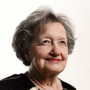
Brenda Milner
Dr. Milner discovered that Patient HM could learn and remember particular types of tasks, and that his memories of the past before the operation were seemingly intact. With this revelation, she established that people have multiple memory systems, governing different activities like language or motor skills, opening the way for a greater understanding of how the brain works. Dr. Milner also conducted much of the early work that established how the different hemispheres of the brains interact, which has had an enormous impact on understanding cognitive learning, language, sensations and emotions.
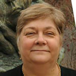
Elissa Newport
Dr. Newport’s primary research interest is in the acquisition of language by young children, in the relationship between language acquisition and language structure, and in the acquisition of language by children and adults after damage to the brain. She also studies maturational effects on language learning, comparing children to adults as first and second language learners, and asking why children perform better than adults in language acquisition.
Betsy Levy Paluck
Dr. Paluck’s research is motivated by two ideas: The first idea is that social psychological theory offers potentially useful tools for changing society in constructive ways. The second idea is that studying attempts to change society is one of the most fruitful ways to develop and assess social psychological theory. Much of her work has focused on prejudice and conflict reduction, using large-scale field experiments to test theoretically driven interventions.

Elizabeth Phelps
Dr. Phelps’ research examines the cognitive neuroscience of emotion, learning and memory. She is particularly interested in extending animal models of emotional learning to human behavior, understanding emotion’s influence in episodic memory, studying the impact of emotion on perception, attention and expression, and extending the basic mechanisms of emotional learning to social behavior, decision making and economics.

Molly Potter
Dr. Potter’s research has focused on very short-term memory for pictures, words, and scenes, and she has received international acclaim for introducing the RSVP paradigm. RSVP stands for Rapid Serial Visual Presentation, and the method has been harnessed to examine the earliest levels of information processing in humans.
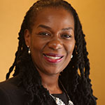
Valerie Purdie Greenaway
Dr. Purdie Greenaway’s research integrates existing knowledge of human biological systems with intergroup (“us” vs. “them”) dynamics. Specifically, her research focuses on neurophysiologic pathways involved in stereotype threat; dialogues about past racial injustice, implicit power, and activation of the sympathetic nervous system; and incorporating biomarkers related to stress to understand physiological mechanisms linking concealment of a stigmatized identity and psychological distress and dysregulated eating.
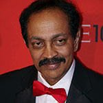
V.S. Ramachandran
Dr. Ramachandran is Director of the Center for Brain and Cognition, which has two distinct agendas—a practical one and a theoretical one. The practical goal is to help develop new therapeutic approaches for the treatment of neurological and psychiatric patients, e.g., chronic pain, stroke, anorexia and childhood autism. The theoretical agenda is to understand the neural basis of human behavior: the question of how the activity of the human brain gives rise to all the richness of our conscious experience.

Jennifer Richeson
Dr. Richeson’s research examines multiple psychological phenomena related to cultural diversity. Her work generally concerns the ways in which sociocultural group memberships such as race, gender, and socio-economic status impact the way people think, feel, and behave, especially during interactions with members of different sociocultural groups. Through her teaching and research, Richeson hopes to contribute to a better understanding of intergroup relations, including how best to foster culturally diverse environments that are cohesive.

Laurie Santos
Dr. Santos explores the evolutionary origins of the human mind by comparing the cognitive abilities of human and non-human primates. Her studies focus on a number of different primate species and incorporate methodologies from cognitive development and cognitive neuroscience. Her research examines the following broad questions: what domains of knowledge are unique to the human mind? Given that human infants and non-human primates both lack language, what similarities and differences do we see in the expression of non-linguistic domains of knowledge?
Rebecca Saxe
Dr. Saxe’s research is motivated by big questions: How does the human brain ‒ an electrical and biological machine ‒ construct abstract thoughts? What aspects of our brains and minds are universal, shared by all humans, and how much is specific to a culture, or unique to an individual? How do children’s brains change as they grow up? How do developmental disorders, like autism, affect brain development? She often asks these questions in the domain of social cognition: how people think about people.
Denise Sekaquaptewa
Dr. Sekaquaptewa’s experimental research program focuses on implicit stereotyping, prejudice, stereotype threat, and effects of category salience on test performance and academic motivation. Her current projects include studies of how environmental factors influence women students in math and science, and how stereotypes affect interracial communication.
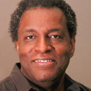
James Sidanius
Dr. Sidanius’ primary research interests include the interface between political ideology and cognitive functioning, the political psychology of gender, group conflict, institutional discrimination and the evolutionary psychology of intergroup prejudice. His most important theoretical contribution to date is the development of social dominance theory, a general model of the development and maintenance of group-based social hierarchy and social oppression.
Tania Singer
Dr. Singer’s research focuses on the developmental, neuronal, and hormonal mechanisms underlying human social behavior, and she is recognised as a world expert on empathy. Her work focuses on social cognition, social moral emotions such as empathy, compassion, envy and fairness, social decision making, and communication. She is interested in the determinants of cooperation and prosocial behavior as well as the breakdown of cooperation and the emergence of selfish behavior.

Linda Smith
Dr. Smith’s central theoretical question is the study of developmental process and mechanisms of change. Her work focuses on early changes in perception, language, and action and how those changes in these areas support each other particularly around the age that children break into language. Her research takes a systems approach, seeking to understand how multiple components interact over nested time scales and levels of analysis and how, in so doing, they yield an individual’s developmental path.
Elizabeth Spelke
Dr. Spelke’s research focuses on the sources of uniquely human cognitive capacities, including the capacity for formal mathematics, the capacity for constructing and using symbolic representations such as maps, the capacity for developing comprehensive taxonomies of objects, and the capacity for reasoning about other humans and their social groups. Dr. Spelke studies these capacities by investigating their origins and growth in human infants and children, by considering human cognition in relation to the capacities of nonhuman primates, and by comparing the capacities of humans from diverse cultures.
Sanjay Srivastava
Dr. Srivastava studies the dynamics of personality in social contexts. He defines “personality” broadly to include traits, identities, roles, emotions, and motivations, and studies personality in many social contexts, including among strangers, in couples, in small groups, and in online societies. He uses a variety of research methods, including laboratory experiments and observations, ecological assessments, longitudinal studies, surveys, and both laboratory-based and automated analyses of digital data, including “big data” methods for large-scale research in social media.

Claude Steele
Dr. Steele is best known for his work on stereotype threat and its application to explain real-world problems such as the underperformance of female students in mathematics and science classes as well as black students in academic contexts. Dr. Steele has spearheaded many successful interventions aimed at reducing the negative effects of stereotype threat, including how to provide critical feedback effectively to a student under the effects of stereotype threat, and how teacher practices can foster a feeling of identity safety.
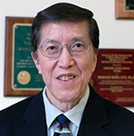
Derald Wing Sue
Dr. Sue is a pioneer in the field of multicultural psychology, multicultural education, multicultural counseling and therapy, and the psychology of racism/antiracism. He has performed extensive multicultural research and writing in psychology and education, and his theories and concepts have paved the way for a generation of younger scholars interested in issues of minority mental health and multicultural psychology.

Shelley Taylor
Dr. Taylor is well known for her work showing that people tend to hold positive illusions of themselves and that it can be healthy to do so, the mechanisms by which stress affects health, and the influence that early experiences can have on how our bodies process stress. Together with her student, Dr. Susan Fiske, she worked to expand the nascent field of social cognition, which examines the ways people think about other people and the influences on those thoughts.
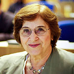
Anne Treisman
Dr. Treisman researches visual attention, object perception, and memory. One of her most influential ideas is the feature integration theory of attention, a two-stage model of visual object perception. During her long career, Dr. Treisman has experimentally and theoretically defined the issue of how information is selected and integrated to form meaningful objects that guide human thought and action.
Barbara Tversky
Dr. Tversky is a leading authority in the areas of visual-spatial reasoning and collaborative cognition. Her specific research interests include spatial language and thinking, event perception and cognition, diagram production and comprehension, gesture, diagram, and language in thinking and in communication, diagrams for discovery and design, creativity, design, art, thinking tools, teaching tools, and design tools.

Leslie Ungerleider
Dr. Ungerleider is the Chief of the NIMH Section on Neurocircuitry, which is devoted to establishing the links between neural structure and cognitive function, especially in the visual modality. Her work on visual attention and perception has shown that in a typical scene many different objects compete for neural representation due to the limited processing capacity of the visual system. Her recent work has shown that, similar to the processing of other stimulus categories, the processing of stimuli with emotional valence is under top-down control, requiring attentional resources.

Simine Vazire
Dr. Vazire’s research examines people’s self-knowledge of their own personality and behavior. Her goal is to measure how people differ from one another not just at the trait level but also in their patterns of fluctuations across different roles and situations. She examines how much insight people have about their own and close others’ traits and patterns. She is also interested in how personality and social relationships (e.g., friendship) influence well-being. Finally, she is interested in research methods, and factors that affect the validity and replicability of psychological research.

Janet Werker
Dr. Werker’s research focuses on understanding the roots of language acquisition by studying speech perception in infancy, the mechanisms by which native speech sound categories are acquired, and how speech perception supports early word learning. She studies infants growing up in different language environments, infants growing up bilingual, and infants with, or at risk for, developmental disabilities. Adult studies focus on speech perception and lexical processing of both spoken language and visual speech. More recently, she has also begun exploring the nature of critical periods, and epigenetic processes that underlie developmental change.
In memoriam
Some of the individuals who were nominated have recently passed, and are memorialized here:
Nalini Ambady
Dr. Ambady was a leading expert on nonverbal behavior and interpersonal perception. Her research found that humans perceive nonverbal cues in response to novel people or situations, and that the information gleaned from an instant impression is often as powerful as information gleaned by getting to know a situation or person over a longer period of time. She and Robert Rosenthal coined the term “thin slices” to refer to such instantaneous non-verbal cues. Dr. Ambady died on October 28, 2013 after a long struggle with leukemia.
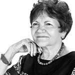
Çiğdem Kağıtçıbaşı
Dr. Kağıtçıbaşı was known for her belief that Western psychology could not account for the whole of humanity, and that it needed to recognise the experiences of those living in non-Western cultures and geographies. She was also passionate about the field of child development, and her work on parent education programs eventually led to the establishment of the Mother Child Education Foundation (MOCEP), which had the goal of implementing early childhood education, family literacy, functional adult literacy and women’s support programs.

Annette Karmiloff-Smith
Dr. Karmiloff-Smith was an expert in developmental disorders, with a particular interest in Williams syndrome. She viewed modularization as a process that results in (rather than begins with) successively more developed and modularized knowledge representations. She also argued for the importance of studying developmental disorders, not as broken processes, but as developmental trajectories that take different paths from the typical and, as a result, provide unique insights into the mechanisms that foster developmental change in all children.